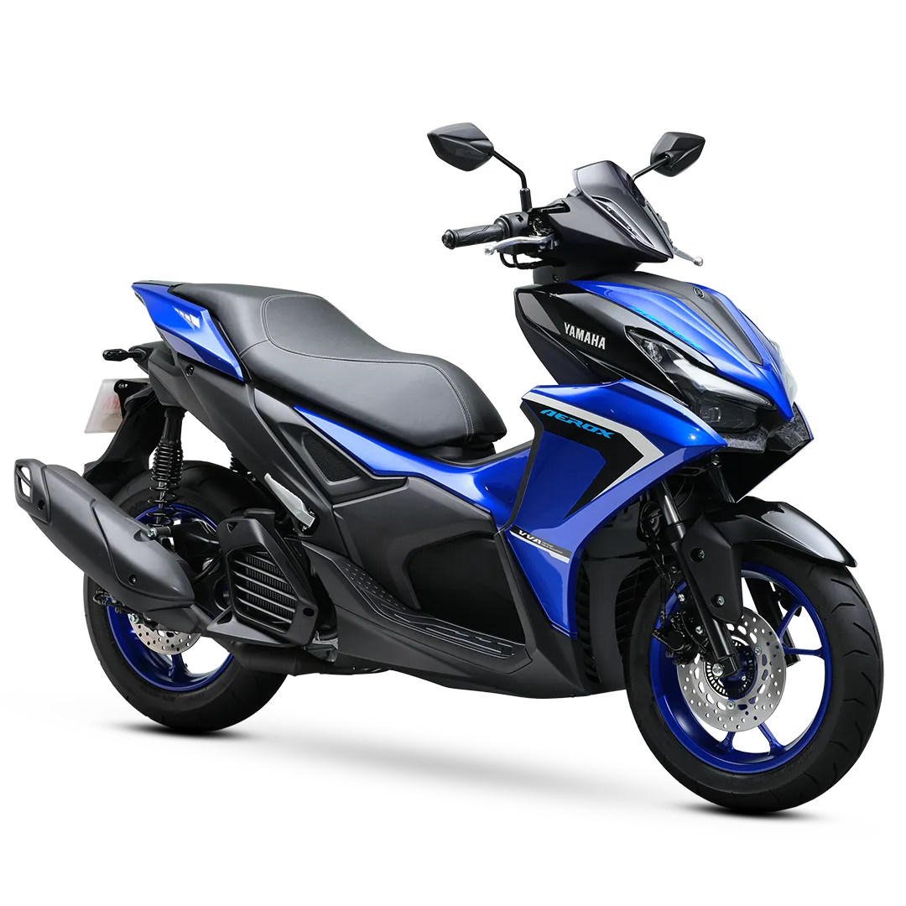
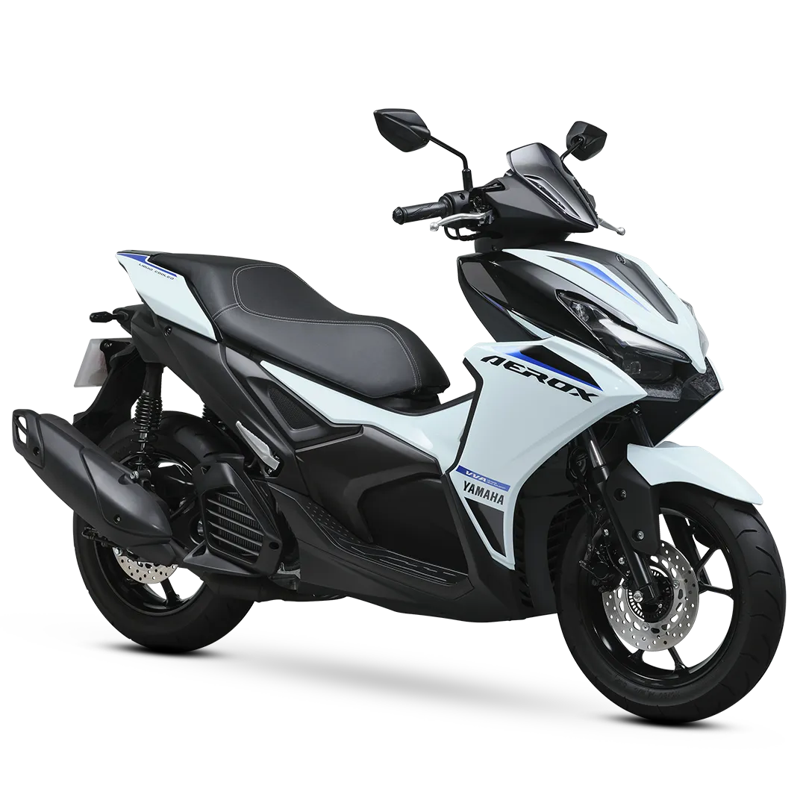
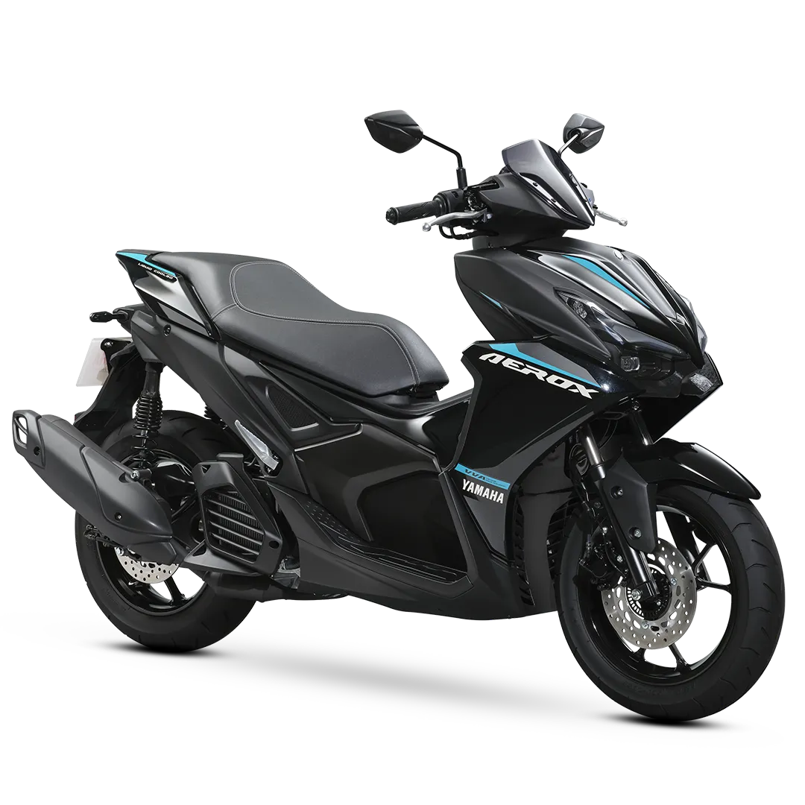

Introduction
This machine was designed with the intention of combining excellent design and racing technology. As a result, the fastest AT with features that complement performance and function was created.
| REAR DISC BRAKE | Precision you can feel. The 230mm rear disc brake delivers consistent stopping power, enhancing control in varying road conditions. It works in harmony with front-end stability to offer a safer, smoother braking experience—whether you’re cruising or cornering hard. |
|---|---|
| 5.5L FUEL TANK | The expanded 5.5-liter tank allows for longer rides. |
| REFINED 155CC VVA BLUE CORE ENGINE | Sharing the same DNA as the SP, the standard Aerox packs pure performance. It combines Yamaha’s Blue Core tech with VVA to offer a balance of acceleration, fuel economy, and reliability. Ideal for daily riders who still want a sporty edge. |
| CONVENIENT UNDERSEAT STORAGE | With 24.5 liters of space, the underseat compartment fits an XL full-face helmet plus extra essentials by offering practical room without sacrificing sporty design. |
| SUPERWIDE TUBELESS TIRES | Measuring at 110/80-14 at the front and 140/70-14 at the rear. Ensuring increased road grip, better cornering stability, and a sportier, more aggressive stance. Whether navigating tight turns or stopping abruptly, these tires enhance both performance and visual appeal. |
Gallery


